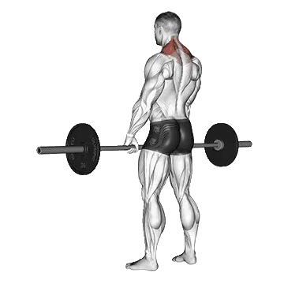

Shrug à la barre
Shrug à la barre permet de consulter la charge moyenne et les standards de force comme repères pour dos. Les muscles principaux sont Trapèzes.

Poids moyen : Intermédiaire
Repère pour une personne de niveau intermédiaire.
Hommes
288 lb
Femmes
148 lb
Poids moyen de Shrug à la barre [1RM]
| Niveau | ||
|---|---|---|
| Débutant | 101 lb | 35 lb |
| Novice | 181 lb | 81 lb |
| Intermédiaire | 288 lb | 148 lb |
| Avancé | 420 lb | 235 lb |
| Élite | 570 lb | 337 lb |
Note : ces standards sont des estimations de 1RM basées sur des pratiquants moyens. Ils peuvent varier selon le poids de corps, l'âge et d'autres facteurs personnels. Consulte les données détaillées dans le tableau ci-dessous.
Standards de force de Shrug à la barre (lb)
Hommes par poids de corps (lb) [1RM]
| Poids de corps | Débutant | Novice | Intermédiaire | Avancé | Élite |
|---|---|---|---|---|---|
| 110 | 37 | 83 | 151 | 238 | 341 |
| 120 | 48 | 99 | 172 | 265 | 373 |
| 130 | 60 | 115 | 193 | 291 | 404 |
| 140 | 71 | 131 | 214 | 317 | 433 |
| 150 | 83 | 147 | 234 | 341 | 462 |
| 160 | 95 | 163 | 254 | 365 | 489 |
| 170 | 107 | 179 | 273 | 388 | 516 |
| 180 | 119 | 194 | 292 | 410 | 542 |
| 190 | 131 | 209 | 310 | 432 | 566 |
| 200 | 142 | 224 | 328 | 453 | 591 |
| 210 | 154 | 238 | 346 | 473 | 614 |
| 220 | 165 | 252 | 363 | 493 | 637 |
| 230 | 177 | 266 | 380 | 513 | 659 |
| 240 | 188 | 280 | 396 | 532 | 680 |
| 250 | 199 | 294 | 412 | 550 | 701 |
| 260 | 210 | 307 | 428 | 569 | 722 |
| 270 | 221 | 320 | 443 | 586 | 742 |
| 280 | 232 | 333 | 458 | 604 | 761 |
| 290 | 242 | 345 | 473 | 621 | 780 |
| 300 | 253 | 358 | 487 | 637 | 799 |
| 310 | 263 | 370 | 502 | 654 | 817 |
Hommes par âge [1RM]
| Âge | Débutant | Novice | Intermédiaire | Avancé | Élite |
|---|---|---|---|---|---|
| 15 | 86 | 154 | 245 | 358 | 485 |
| 20 | 99 | 176 | 281 | 409 | 555 |
| 25 | 101 | 181 | 288 | 420 | 570 |
| 30 | 101 | 181 | 288 | 420 | 570 |
| 35 | 101 | 181 | 288 | 420 | 570 |
| 40 | 101 | 181 | 288 | 420 | 570 |
| 45 | 96 | 171 | 273 | 399 | 540 |
| 50 | 90 | 161 | 256 | 374 | 507 |
| 55 | 84 | 149 | 237 | 346 | 469 |
| 60 | 76 | 136 | 216 | 316 | 428 |
| 65 | 69 | 123 | 196 | 285 | 387 |
| 70 | 62 | 110 | 175 | 256 | 347 |
| 75 | 55 | 98 | 157 | 229 | 310 |
| 80 | 49 | 88 | 140 | 205 | 278 |
| 85 | 44 | 79 | 126 | 183 | 249 |
| 90 | 40 | 71 | 113 | 165 | 224 |
Femmes par poids de corps (lb) [1RM]
| Poids de corps | Débutant | Novice | Intermédiaire | Avancé | Élite |
|---|---|---|---|---|---|
| 90 | 14 | 43 | 93 | 160 | 242 |
| 100 | 18 | 51 | 104 | 174 | 259 |
| 110 | 23 | 58 | 114 | 188 | 275 |
| 120 | 27 | 65 | 124 | 200 | 291 |
| 130 | 32 | 72 | 133 | 212 | 305 |
| 140 | 36 | 79 | 142 | 224 | 319 |
| 150 | 40 | 86 | 151 | 235 | 332 |
| 160 | 45 | 92 | 159 | 245 | 344 |
| 170 | 49 | 98 | 167 | 255 | 356 |
| 180 | 53 | 104 | 175 | 265 | 367 |
| 190 | 58 | 110 | 183 | 274 | 378 |
| 200 | 62 | 116 | 190 | 283 | 388 |
| 210 | 66 | 121 | 197 | 291 | 398 |
| 220 | 70 | 127 | 204 | 300 | 408 |
| 230 | 74 | 132 | 211 | 308 | 418 |
| 240 | 78 | 137 | 217 | 316 | 427 |
| 250 | 81 | 142 | 223 | 323 | 435 |
| 260 | 85 | 147 | 229 | 330 | 444 |
Femmes par âge [1RM]
| Âge | Débutant | Novice | Intermédiaire | Avancé | Élite |
|---|---|---|---|---|---|
| 15 | 30 | 69 | 126 | 200 | 287 |
| 20 | 34 | 79 | 144 | 229 | 329 |
| 25 | 35 | 81 | 148 | 235 | 337 |
| 30 | 35 | 81 | 148 | 235 | 337 |
| 35 | 35 | 81 | 148 | 235 | 337 |
| 40 | 35 | 81 | 148 | 235 | 337 |
| 45 | 33 | 76 | 140 | 223 | 320 |
| 50 | 31 | 72 | 132 | 209 | 300 |
| 55 | 29 | 66 | 122 | 194 | 278 |
| 60 | 27 | 61 | 111 | 177 | 254 |
| 65 | 24 | 55 | 100 | 160 | 229 |
| 70 | 22 | 49 | 90 | 143 | 206 |
| 75 | 19 | 44 | 81 | 128 | 184 |
| 80 | 17 | 39 | 72 | 115 | 164 |
| 85 | 15 | 35 | 65 | 103 | 147 |
| 90 | 14 | 32 | 58 | 93 | 133 |
Note : une barre standard de salle de sport pèse généralement 44 lb.
Suivi et analyse dans l'app Shiba
Consultez poids, répétitions et progression au même endroit.
Comment lire le tableau
| Niveau | Description | Répartition |
|---|---|---|
| Débutant | Maîtrise la bonne technique et s'entraîne régulièrement depuis au moins 1 mois. | Bas 5% |
| Novice | S'entraîne régulièrement depuis au moins 6 mois. | Top 80% |
| Intermédiaire | S'entraîne régulièrement depuis au moins 2 ans. | Top 50% |
| Avancé | S'entraîne régulièrement depuis plus de 5 ans. | Top 20% |
| Élite | S'entraîne spécifiquement sur cet exercice depuis plus de 5 ans. | Top 5% |
Autres exercices
Dos
Rowing T-bar
Dos
Shrug aux haltères
Dos / Haltères
Rowing Pendlay
Dos
Rowing à la machine
Dos / Machine
Pull-over aux haltères
Dos / Haltères
Écarté inversé aux haltères
Dos / Haltères
Rowing haltères avec appui poitrine
Dos / Haltères
Tirage vertical prise serrée
Dos
Écarté inversé à la machine
Dos / Machine
Tirage vertical prise inversée
Dos
Tractions prise neutre
Dos / Poids du corps
Tirage bras tendus
Dos